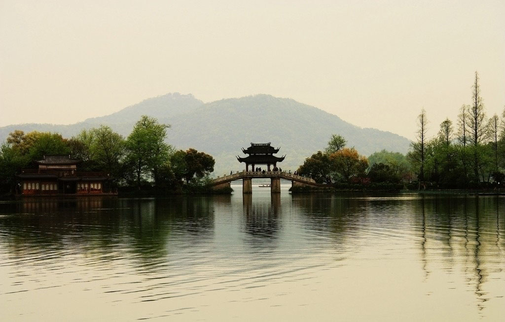
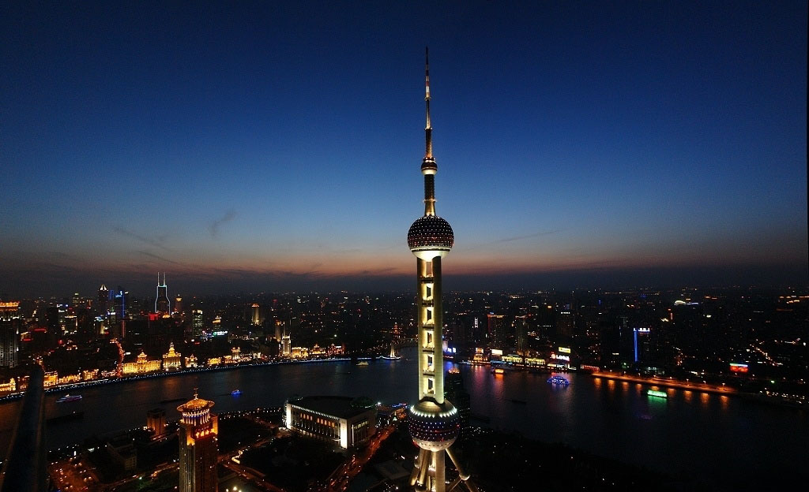
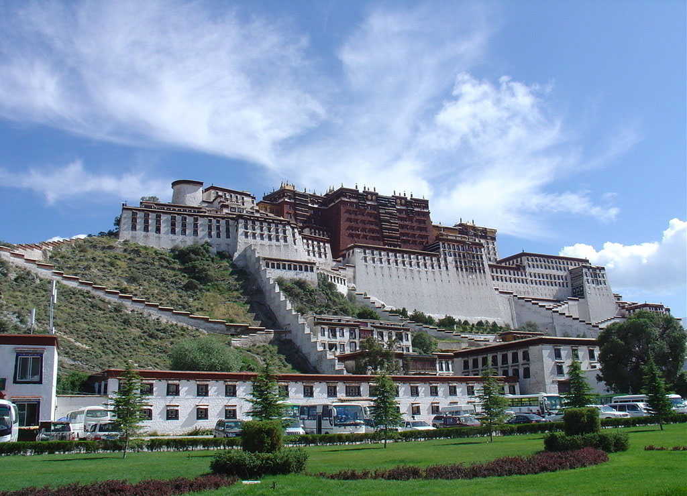
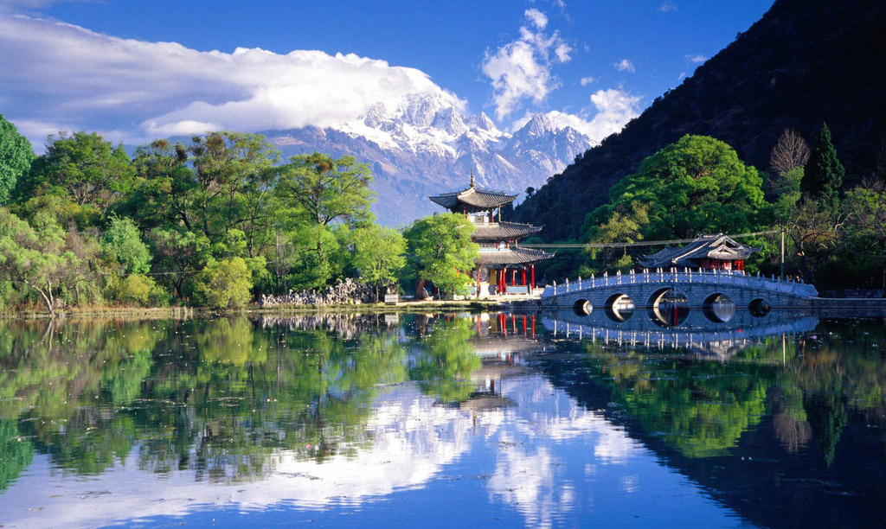

You are here: Home >> Destinations >> China
China
Tours
| Tour Image | Tour Description | Key Info |
|---|---|---|
Ancient Culture and Modern Miracles in Beijing and Xi'anA 7 days/6 nights tour in Beijing and Xi'an. Hike the Great Wall, walk the Forbidden City, roam the Long Corridor at the Summer Palace, see the Temple of Heaven in this imperial palace. Travel back in time to see the Banpo Museum, Terracotta Warriors & Big Wild Goose Pagoda and discover the tomb of Emperor Qin Shihuang in Xi'an. |
Price - from AU$3695. Duration - 7 days More Info |
|
|  |
Hangzhou - Paradise on EarthA 4 days/3 nights tour from Shanghai to Hangzhou. Travel the West Lake(including the Island on the lake), Lingyin Temple, Six Harmonies Pagoda, Listen the legend of West Lake while crusing boat on the lake, and enjoy the tea in Meijiawu Tea Plantation and Tea Shop and Farmhouse Tea Shop. |
Price - from AU$399 Duration - 4 days More Info |
|  |
China's Golden TriangleA 8 days/7 nights tour to Beijing, Xi'an and Shanghai. See Tian'anmen Square, visit the Forbidden City, the Temple of Heaven, hike the Badaling Great Wall. Appreciate Xi'an Historic Relics, visit the Terra-cotta Warriors and Horses. Have three days sightseeing of modern Shanghai. Walk through the Yu Garden, visit the Bund and Jade Buddha Temple. Explore the modern Shanghai from the Oriental Pearl TV Tower. Includes all entries. Dinners in local restaurants. Includes flights. From AU$4370. |
Price - from AU$1399 Duration - 8 days More Info |
|  |
Mystery and Essence of TibetA 6 days/5 nights tour to the capital of Tibet - Lhasa. Visit the famous Potala Palace, enjoy the high-altitude natural beauty, walk through Barkhor Street, listen to the history in Jokhang Temple, see Drepung Monastery, Sera Monastery and Gandan Monastery. |
Price - from AU$939. Duration - 6 days More Info |
|  |
The Ethnic Minorities in YunnanA 15 days/14 nights tour to Yunnan Province - with the most number of ethnic population in China. Experience exciting ethnic customs, myths, singing, dances, paintings and ancient music.Visit Yunnan Nationality Museum, to enjoy the ecological environment, religious practice, culture and cultural relics of ethnic minorities, travel the capital of Yunnan - Kunming, and cruise along Li River. |
Price - from AU$2149 Duration - 15 days More Info |
Tips
- Chinese usually use chopsiticks. Although there are some restaurants offering forks and knifes, it would be good to learn how to use them before travelling to China.
- Learn some Chinese, such as numbers which can be used for communicating with cashiers when you go shopping.
- While travelling in a city, it is prefereable to take the subway or train instead of taking a bus or taxi, because traffic congestion always happens in China, especially in Beijing and Shanghai.
- Facebook and Twitter have been banned in China. So you can only save your photos and upload then online when you finish travelling in China. But you could still reply the facebook message via email if you open the email notification.
- Remain alert and keep your valuables with you at all times. Pickpocketing usually happens in crowded places such as shopping centre.
- In China, spring is from April to June, summer from June to September, Autumn from September to October, and winter from October to March. It is colder in north than in south. Bring clothes according to the season when you are travelling.
 Clomx Travels is designed to help you, the traveler, have an easy, carefree and no-stress approach to planning your next trip! Check out our top 5 countries, or instantly get a preliminary quote for your holiday. Feel free to
Clomx Travels is designed to help you, the traveler, have an easy, carefree and no-stress approach to planning your next trip! Check out our top 5 countries, or instantly get a preliminary quote for your holiday. Feel free to